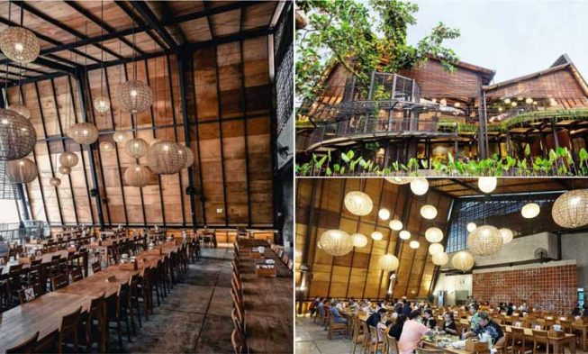

Beranda
RUMAH MAKANAN KHAS SUNDA

Di website ini kami akan sedikit menjelaskan mengenai Rumah Makanan Khas Sunda.Di website ini Ada beberapa info Mengenai Menu makanan yang ada di rumah makanan khasa sunda ini.Menu-Menu yang ada di rumah makanan khas sunda ini
ada Nasi Kuning, Sayur Sayuran seperti Sayur Brokoli, Rendang, Sate dan Baso. Dan di sini juga ada berbagai minuman seperti teh manis, teh daun jambu, Teh mint, kopi, Dan juga Es Krim Yakult.